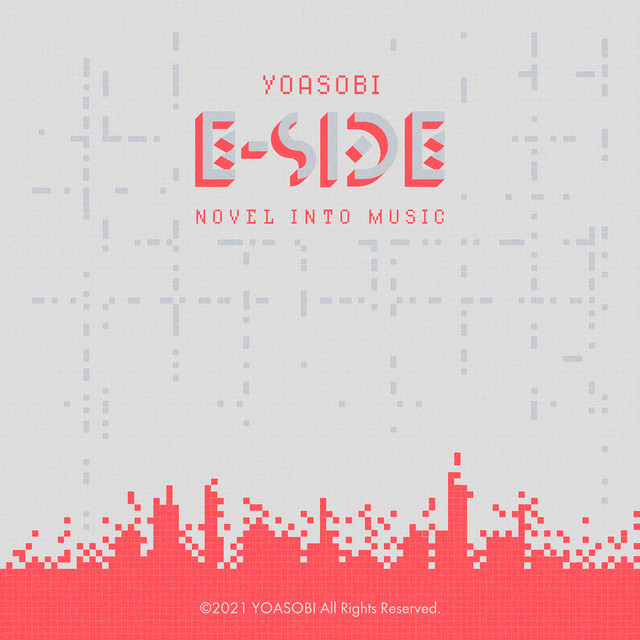
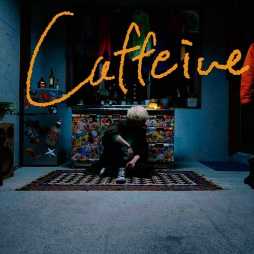

RGB

Don't know where we disconnected each of our stories
Now we go, once again, past where we have split off
Even if, many times, we have been separated, you can see
We're connected, still
So, goodbye, farewell then
We said the words, departed
How many morning suns have we seen ever since that day?
In our respective new future destinations
Extension of that day
Today is when we meet
With every moment that leads up to our meeting time
I keep feeling my heart beating louder as the seconds pass
As I look up at the sky that has cleared from the rain
It was just like what we saw that day
Upon us was a seven-colored bridge
Here and now, we were able to meet once again
We have kept our connection alive all along
The things we talk about
We wanna speak about
Are never ending, overflowing out and so
Hold up, this won't be loosening, for we know
We were rushed by the seasons, forever moving
And beyond where the roads could be leading us to
No matter where we stand
As often as we want
We gotta tie our strings together like before
We'll meet again soon
Ah, what was this?
And now, we cannot end the reminiscence
And those recollections, retentions
We trace and we laugh
Filling in sceneries we were living apart
The conversation offer a shortcut
And we don't even need to worry about tomorrow
As if in a machine, and we're back to our past
Скачать текст песни
Into The Night

Seize a move, you're on me
Falling, and we were dissolving
You and me, skies above and wide
It brings on the true night on me
All I could feel was a "goodbye"
Those only words you wrote, it's plenty to understand ya
The sun is going down, the sky behind and
Visions of you would stand
Overlapping with you and the fence beyond
Remember the night that we met up?
Broke into me and taken everything left in my heart
So fragile, is that air, it always keeps on revolving near and wide
Loneliness envelops deep in your eyes
It's stuck in "tick-and-tocking" mode
Never refraining shamble, block of sound
Too many terrible noises around
And the voice ringing in me gets louder
With tears about to fall
I need to find me an average happy tiptoe
Locating, never tough when I'm with you
Saw what got seen hid beneath, and louder nights keep beating
I'm going to you, and giving brighter shiny tomorrows
What can "night" for you mean, infinite? You could run with me
Place your hand in mine, you gotta stay, hold up
Want to leave it behind, dark cruel days
In deep, you may have hid before
I'm embracing you until more heat dissolve what is caught up
Sun will soon rise up into a day you're no more too afraid
Keep all of me in you
Only perceiving through your eyes
I see nothing, I'll soon hate you, keep me out, I'm crying out
You're falling into deeper fascination, givin' away your love
That expression has got me crying out
Скачать текст песни
Yasagure Kaido (やさぐれカイドー)
あぁ 何は無くとも誰もいない
思いのほか腹も減っていない
で、やたらセンチアホらしい頭ん中
どうせ伝えらんないし気分いいん
だから真面目な話はほんとやめてくれ
This is beams 慢性退屈
蛆のソープランド black line on eye
ミス 財布 何もない分
うちのmonster 育っていくんだよ
He 神父 完全トラップ
後ろ向けたらほんと良かったよ
いつからこここんなん建ってんの？
取り残されていた
一人の夜は楽しくて
当然 昼間のツケ払おうとしたよ
あぁ 何は無くとも誰もいない
思いのほか腹も減っていない
で、やたらセンチアホらしい頭ん中
明日生きてるのかもわからんのに
贅沢に泣いて本当治らんね
This is beams 慢性退屈
蛆のソープランド black line on eye
ミス 財布 何もない分
うちのmonster 育っていくんだよ
He 神父 完全トラップ
後ろ向けたらほんと良かったよ
いつからこここんなん建ってんの？
取り残されていた
一人の夜は楽しくて、イェ
Скачать текст песни
Caffeine

もう何回うずくまってしまったか
覚えていない位には
切ない匂い 覚え過ぎたんだ
排水口 なだれ込んだ心の中身達
シンクにレモネード 零した次の夜が
目を閉じ 開けた時には
すぐ傍まで顔を見せている
叶わない思いの類が
バスルームのノブを落として
一人に慣れた最近をまだ叫んでる
最後のお願いを聞いておくれ
僕の事を十秒間だけでいいから教えてよ
もう何回一人で死んでしまったか
覚えてない位には
切ない匂い 苦し過ぎたんだ
枕の上 倒れこんだ心の灯たち
子供が永遠笑っているような純粋な事では
消せない病気 隠し過ぎたんだ
その幸せ 包み込んだ後ろの歪み達
Скачать текст песни